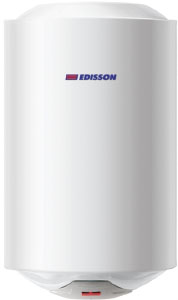
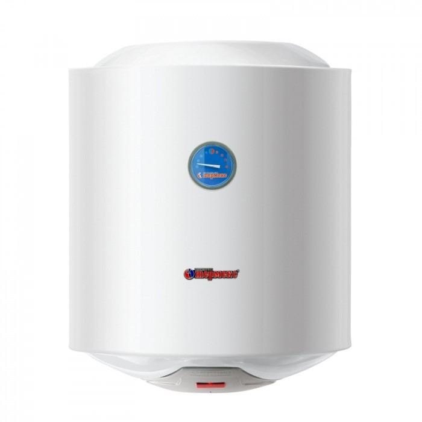
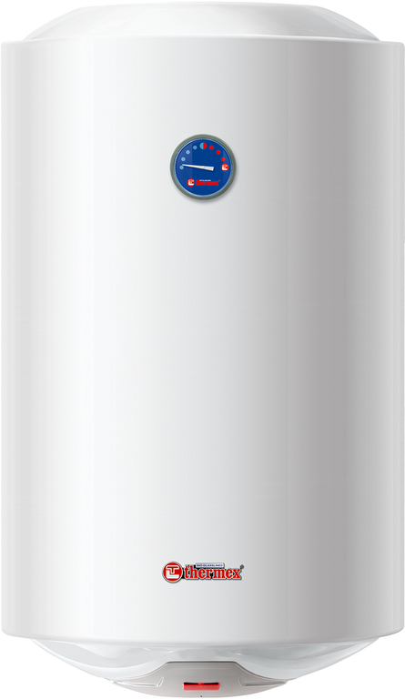
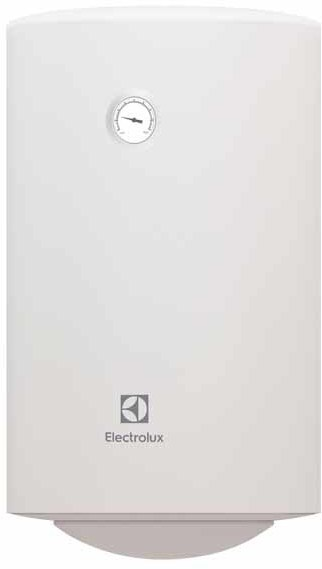
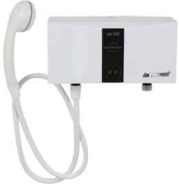
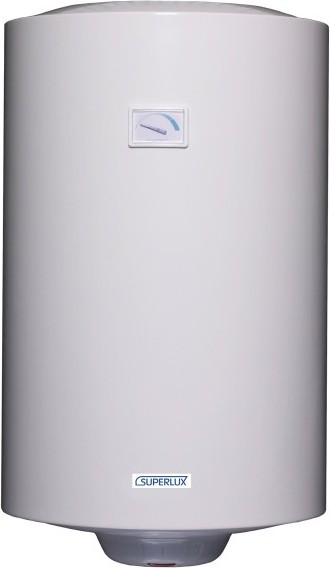

Краткое руководство для тех,
кто всегда хочет иметь чистую горячую воду
Занимается установкой и обслуживанием водонагревательного и отопительного оборудования.
За 5 лет в профессии установил и отремонтировал более 20 тысяч водонагревателей.
Знает про них всё!
Опрессовки, аварии на теплотрассе —
это все не волнует владельцев
водонагревателей.
Горячая водопроводная вода имеет неприятный запах, часто — примесь ржавчины, в нее добавляют химические вещества для предотвращения ржавления труб и образования накипи. С водонагревателем горячая вода такая же чистая, как и холодная.
Легко нагреть воду для душа, мытья рук и посуды там, где горячего водоснабжения нет в
принципе.
Например,
в саду или на даче.
Для любой городской квартиры и дачи подходят электрические накопительные и проточные водонагреватели. Чем они отличаются друг от друга?
Накопительный |
Проточный |
| Нагревает воду в течение 1-3 часов | Нагревает воду мгновенно непосредственно в момент использования |
| Нагревает воду до 75 градусов | Max нагрев 45 градусов |
| Имеет достаточно большие габариты | Занимает мало места |
| Чуть дороже: от 4000 рублей | Более экономный вариант: от 1990 рублей |
| Надежный вариант на каждый день - для всей квартиры, зимой и летом | Подходит для использования от случая к случаю. Идеальный вариант для маленьких помещений |
| Все накопительные водонагреватели | Все проточные водонагреватели |
Три основных шага
В городской квартире и любом небольшом помещении можно установить водонагреватель объемом от 10 до 150 литров. Баки более 150 литров чаще всего используются в частных домах.
Какой по объему водонагреватель подойдет именно вам, зависит от количества людей в вашей семье и того, насколько интенсивно вы пользуетесь горячей водой.
В среднем, на мытье рук 1 человека уходит 3 литра горячей воды, на мытье посуды - до 16 литров, на душ - 16-27 литров, а чтобы 1 раз принять ванну, нужно до 150 литров.
| Количество потребителей воды | Количество точек потребеления воды | Объем водонагревателя |
| 15 л | ||
| 50 л | ||
| 80 л | ||
| 100 л | ||
| 120 л | ||
| 150 л |
На какие составляющие обратить внимание?
Внутреннее покрытие бака бывает из нержавеющей стали и стеклоэмали. Водонагреватели из нержавейки - лидеры по надежности и сроку службы, но они дороже. Поэтому большинство пользователей все же предпочитает стеклоэмаль.
Это нагревательный элемент устройства. Тэны бывают погружные (находятся непосредственно в воде) и сухие (не соприкасаются с водой). Сухие служат дольше, потому что защищены от накипи.
Элемент, который предотвращает коррозию и смягчает воду. Анод необходимо менять раз в год. Некоторые производители даже включают замену анода в обязательные условия гарантии и отказывают пользователям в ремонте, если анод не менялся.
Механическое управление дешевле, проще и устойчивей к перепадам напряжения. Электронное позволяет задавать часы нагрева и при наличии двухтарифных счетчиков экономить электричество, нагревая воду в ночные часы. Бойлеры с электронным управлением не рекомендуется устанавливать в частных домах, где случаются скачки напряжения.
Заранее определитесь с местом размещения. Проверьте, поместится ли туда выбранная модель.
Накопительным водонагревателем можно греть воду весь год
Когда вы начинаете пользоваться водонагревателем, то перестаете платить за горячую воду. Зато расход холодной воды и электричества возрастает! Суточное потребление электричества зависит от мощности водонагревателя и часов нагрева. Чаще всего греть воду водонагревателем все же выгоднее, чем платить за горячую воду.
Как выбрать проточный водонагреватель
Если вы выбираете вариант для использования от случая к случая, например, только на время летних опрессовок, ваш вариант — проточный водонагреватель. Он греет воду непосредственно в момент ее использования. Чем ниже напор - тем теплее будет вода.
Водонагреватели мощностью 3,5 кВт можно просто включить в розетку, проточные водонагреватели от 5 кВт должны быть вмонтированы в систему электроснабжения.
Для того чтобы твердые частицы не попадали внутрь, прибор должен быть снабжен фильтрами очистки. Поинтересуйтесь при покупке, есть ли такая защита.
|

Накопительный водонагреватель Edisson ER 50V
50 литров
4 790 р.
|

Накопительный водонагреватель Thermex ER 50-V Silverheat
50 литров
5 590 р.
|

Накопительный водонагреватель Thermex ER 80-V Silverheat
80 литров
6 590 р.
|
|

Накопительный водонагреватель Electrolux EWH 80 Quantum Pro
80 литров
6 690 р.
|

Проточный водонагреватель Etalon Jet 350 Combi
1 990 р.
|

Накопительный водонагреватель Superlux NTS 100
100 литров
5 990 р.
|
Благодарим за информацию профессионалов - компанию «Сервисная служба».
Цены действительны для регионов республика Башкортостан, Новосибирская область, Омская область, Пермский край, Самарская область, Свердловская область, Челябинская область, Тюменская область